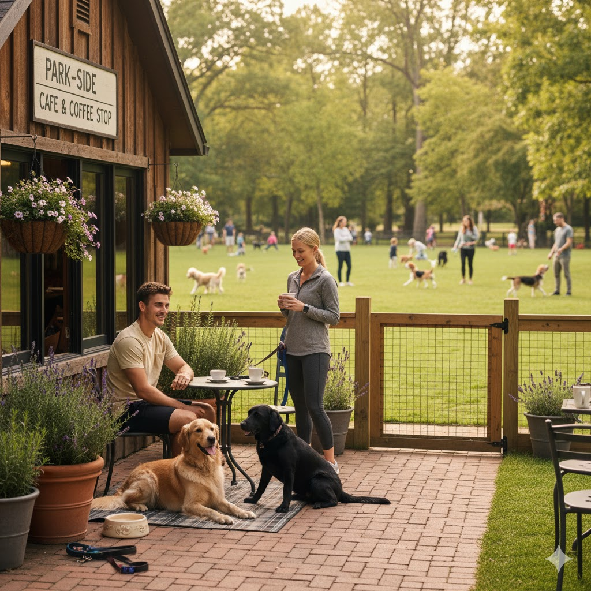

Waarom nabijheid van een park belangrijk is
Voor veel hondeneigenaren is het prettig om een koffiestop te plannen na een wandeling. Een locatie dicht bij een park of uitlaatveld betekent dat jouw hond eerst zijn energie kwijt kan, waarna jullie beiden kunnen ontspannen. Dit maakt de pauze leuker en rustiger voor baas én hond.
Voordelen van koffiestops naast parken
Een koffiezaak in de buurt van een uitlaatplek is praktisch en gastvrij. Je hoeft geen omwegen te maken en jouw hond krijgt de beweging die hij nodig heeft.
Waar letten we op in dit overzicht?
- Directe nabijheid: minder dan 5 minuten lopen van een park of uitlaatplek.
- Veilige routes: geen drukke straten of gevaarlijke oversteken.
- Ruimte om te spelen: grasvelden, wandelpaden of losloopgebieden.
- Comfort voor de baas: gezellige terrassen of zitplekken na het wandelen.
Onze tips voor koffiestops bij parken
n Alkmaar zijn meerdere plekken waar je een wandeling kunt afsluiten
met een koffiestop. Dit zijn enkele aanraders:
1. Koffiehuis't Park – direct naast het stadspark, ideaal na
een korte ronde.
2. De Hout Brasserie – gelegen bij Alkmaarderhout, met ruime
uitlaatmogelijkheden.
3. Espresso aan de Singel – dichtbij een groenstrook waar
honden welkom zijn.

Tips voor een relaxte pauze met je hond
Kies altijd een plek waar je hond rustig kan bijkomen van de wandeling. Neem een drinkfles mee voor onderweg en controleer of er voldoende schaduw is. Een korte uitlaatrond voor jouw koffiestop zorgt ervoor dat je hond tijdens het zitten meer ontspannen is.